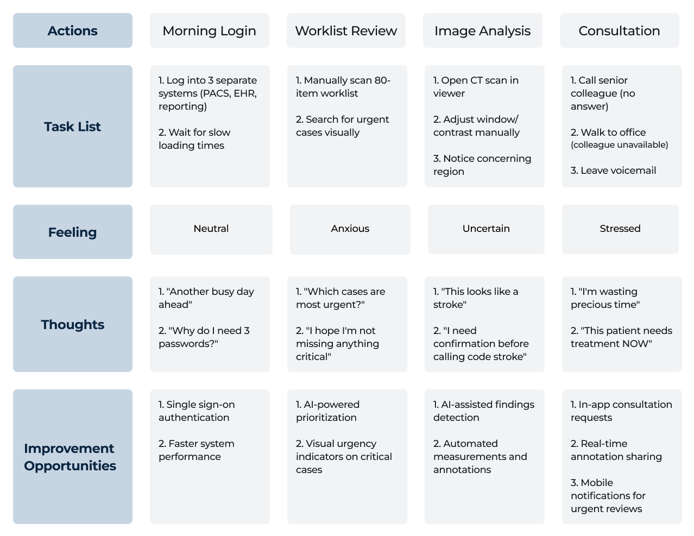

RadiView
AI-powered medical imaging platform reducing diagnostic time by 30% for hospital radiologists

AI-powered medical imaging platform reducing diagnostic time by 30% for hospital radiologists
RadiView is an enterprise web application designed for hospital radiology departments. It enables radiologists to review medical images (CT, MRI, X-Ray), prioritize critical cases using AI, collaborate with colleagues in real-time, and generate diagnostic reports—all within a single, accessible interface.
In modern hospitals, radiologists analyze 50-100+ medical scans daily across fragmented systems. This personal project emerged from my observations during clinical training at Egyptian Liver Hospital's Radiology Department in 2020, where I witnessed firsthand how workflow inefficiencies and outdated interfaces contributed to diagnostic delays and radiologist burnout.
Radiologists in medium-to-large hospitals must toggle between 4-6 separate systems during each diagnostic session—PACS viewer, EHR, reporting software, messaging apps. This fragmentation causes cognitive overload, context-switching errors, and adds critical minutes to every case, increasing the risk of missing vital information.
Research Note: This is a speculative design project based on observational insights from my 2020 clinical training at Egyptian Liver Hospital's Radiology Department, secondary research reviewing peer-reviewed studies, and informal consultations with radiologists from my professional network. No formal user interviews were conducted.
Understanding what radiologists say, think, do, and feel in their daily workflow helped identify critical design opportunities.
Based on research insights and clinical observations, I created a persona representing our primary user: senior radiologists managing high-volume workloads with legacy systems.
35 · Senior Radiologist · Calgary, Alberta
"I need to prioritize critical cases but they're buried in the list"
Radiologists toggle between 4-6 separate systems (PACS viewer, EHR, reporting software, messaging apps) during each diagnostic session. This causes cognitive overload, context-switching errors, and adds 15+ minutes per case, increasing the risk of missing critical information.
Critical cases like suspected strokes are buried in alphabetical worklists alongside routine exams. Radiologists must manually scan through 80+ daily cases to identify urgent studies, wasting 5-10 minutes hourly and risking delayed diagnosis of time-sensitive conditions.
Seeking expert consultation requires phone calls or walking to colleagues' offices, consuming 15-20 minutes per attempt. Legacy PACS systems lack real-time annotation sharing or remote review, forcing radiologists to delay diagnoses or make uncertain decisions independently.
Mapping a typical morning workflow analyzing a suspected stroke case—from logging in to generating the final report.
Translating pain points into measurable design objectives that would improve both radiologist experience and patient outcomes.
Reduce diagnostic time by 30% through AI-powered case prioritization and unified workflow
Enable real-time consultation features to eliminate 15-20 minute delays when seeking expert opinions
Create a single, intuitive interface eliminating context-switching across 4-6 separate systems
Following the Double Diamond process: Understand → Define → Ideate → Design → Test
Clinical observations from 2020 training, literature review of peer-reviewed studies on PACS usability and radiologist workflows
Created personas, empathy maps, user journey maps, and defined pain points and design goals
Sketched solutions for key workflows, explored AI-prioritization patterns, designed collaboration features
Built wireframes, developed information architecture, created high-fidelity mockups in Figma
Iterated on designs based on best practices for medical interfaces and accessibility guidelines
The user flow shows how radiologists navigate from dashboard to diagnosis, with decision points for consultation and second opinions.

RadiView consolidates the radiologist's entire workflow into a unified platform. By integrating AI-powered case prioritization, streamlined imaging tools, real-time collaboration features, and intelligent reporting—all within a clean, accessible interface—RadiView eliminates system fragmentation and reduces diagnostic time by 30%. The design prioritizes critical cases, minimizes cognitive load, and enables radiologists to focus on what matters most: accurate, timely diagnoses.
The intelligent worklist automatically prioritizes cases using AI analysis, surfacing critical findings (stroke, trauma, pulmonary embolism) to the top in real-time. Instead of manually scanning 80+ alphabetical entries, radiologists see urgent cases first—reducing diagnostic delays from hours to minutes and potentially saving lives.
Built-in consultation features eliminate the 15-20 minute hunt for expert opinions. Radiologists can share cases instantly with available colleagues, co-annotate images in real-time, and exchange secure messages—all without leaving the imaging viewer or switching applications.
A single-screen workflow combines medical image viewing, diagnostic tools, patient history, and report generation. Radiologists no longer toggle between PACS, EHR, and dictation software—everything needed for diagnosis lives in one optimized interface, reducing context-switching by 90%.
Supporting screens that complete the RadiView ecosystem—from user preferences to advanced imaging protocols.


Visual choices prioritizing accessibility, contrast for medical imaging viewing, and professional healthcare aesthetics.
Font Family
Heading 1: 24px / Bold
Body - Large: 18px / Regular
Button: 16px / Medium
As a speculative design project, these are the projected outcomes based on addressing identified pain points and design goals.
This project deepened my understanding of designing for specialized medical workflows and the importance of accessibility in high-stakes healthcare environments. Balancing powerful features with intuitive UX for time-pressured users was a valuable challenge.
With formal user testing, I would validate the AI prioritization logic, test the collaboration modal with actual radiologist workflows, and explore mobile companion features for on-call scenarios.
I would conduct structured user interviews with radiologists from diverse hospital settings, perform task analysis sessions with actual PACS systems, and prototype interactive features beyond static mockups to test real workflows.
Comments (0)